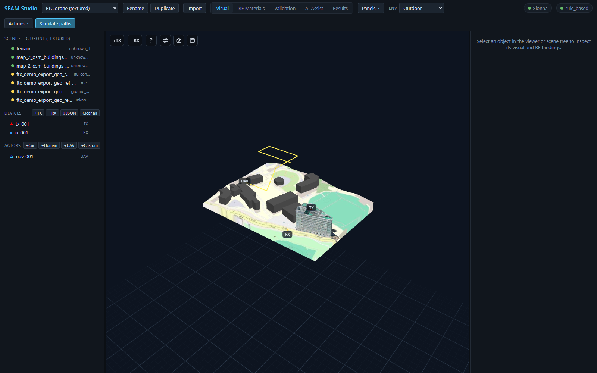
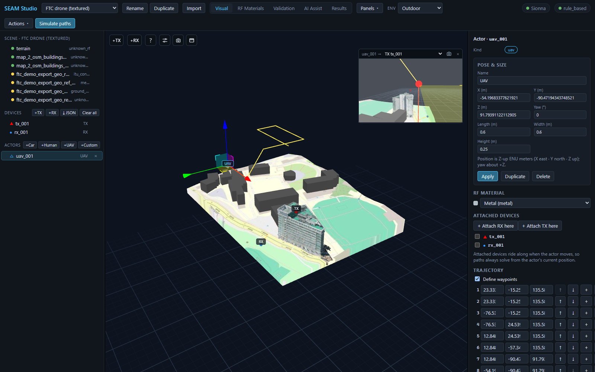

Getting started
First launch, the toolbar and the five modes, the scene tree, devices and actors, the inspector, and dockable panels.
Read the guide →
Importing scenes
Mitsuba XML and zip bundles, OpenStreetMap building extraction, device & trajectory JSON, and environment modes.
Read the guide →
RF materials & AI
The material library, assignment and validation, AI-suggested materials with evidence and confidence, and natural-language rules.
Read the guide →
Simulating
Ray paths and accuracy presets, radio maps, MIMO beamforming, and the channel-analysis dashboard with CIR/CFR charts.
Read the guide →
Trajectories & UAVs
Moving receivers, UAV actors with attached antennas, trajectory playback semantics, and per-entity POV views.
Read the guide →
ML datasets & exports
Ground-truth dataset generation, the RFData bundle export, and paper-ready figure capture.
Read the guide →New to SEAM Studio? The 15-minute tutorial walks the whole loop once — scene → materials → simulation → dataset.